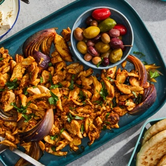

← All recipes
Oven-Roasted Chicken Shawarma

Servings: 4 to 6 servings ·
Ingredients
- 2 lemons, juiced
- 1/2 cup plus 1 tablespoon olive oil
- 6 cloves garlic, peeled, smashed and minced
- 1 teaspoon kosher salt
- 2 teaspoons freshly ground black pepper
- 2 teaspoons ground cumin
- 2 teaspoons paprika
- 1/2 teaspoon turmeric
- A pinch ground cinnamon
- Crushed red pepper, to taste
- 2 pounds boneless, skinless chicken thighs
- 1 large red onion, peeled and quartered
- 2 tablespoons chopped fresh parsley
Directions
- Prepare a marinade for the chicken. Combine the lemon juice, 1/2 cup olive oil, garlic, salt, pepper, cumin, paprika, turmeric, cinnamon and crushed red pepper in a large bowl, then whisk to combine. Add the chicken and toss well to coat. Cover and store in refrigerator for at least 1 hour and up to 12 hours.
- When ready to cook, heat oven to 425 degrees. Use the remaining tablespoon of olive oil to grease a rimmed sheet pan. Add the quartered onion to the chicken and marinade, and toss once to combine. Remove the chicken and onion from the marinade, and place on the pan, spreading everything evenly across it.
- Put the chicken in the oven and roast until it is browned, crisp at the edges and cooked through, about 30 to 40 minutes. Remove from the oven, allow to rest 2 minutes, then slice into bits. (To make the chicken even more crisp, set a large pan over high heat, add a tablespoon of olive oil to the pan, then the sliced chicken, and sauté until everything curls tight in the heat.)
- Scatter the parsley over the top and serve with tomatoes, cucumbers, pita, white sauce, hot sauce, olives, fried eggplant, feta, rice — really anything you desire.
Original source: cooking.nytimes.com